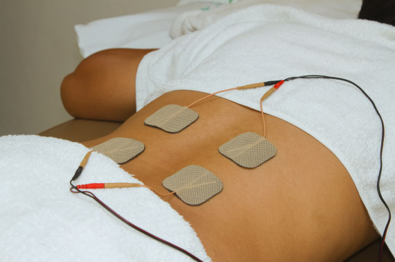

01
Published
Page Hero & Breadcrumb
Headline, subtitle, and breadcrumb hierarchy trail on chronic-pain.html
Frontend Source of Truth · Frontend/conditions/chronic-pain.html
Configure hero headline and subtitle, Frequency Specific Microcurrent (FSM) mechanism (ATP production, cytokine reduction), 13 treatable pain conditions checklist, patient procedure expectations (warm damp towels, 30-120 min), and CTA band.
Headline, subtitle, and breadcrumb hierarchy trail on chronic-pain.html
Top banner image, lead quote on pain relief, clinic practice introduction, and inline CTA

Featured visualTissue frequency vibration, cellular ATP energy production, and alternative personalized plans
Nerve and musculoskeletal pain indications checklist (13 items)
Warm damp towel procedure, session length, and direct clinic call box
Full-width banner at the bottom of the page prompting pain relief consultation
Browser page title, search description snippet, and indexing directives